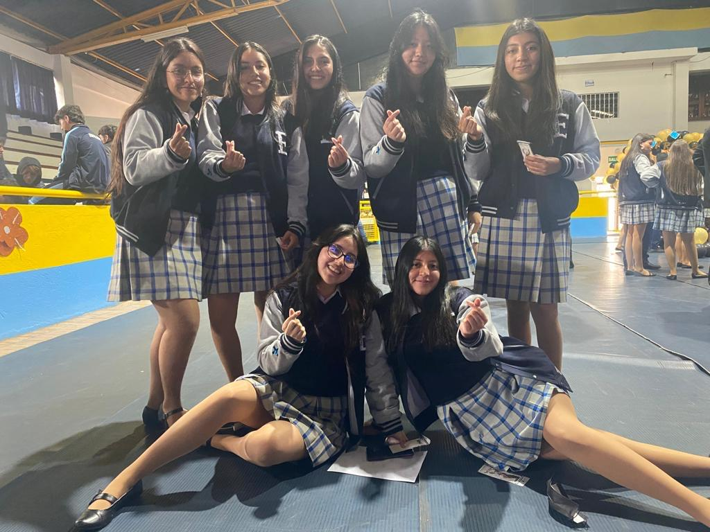
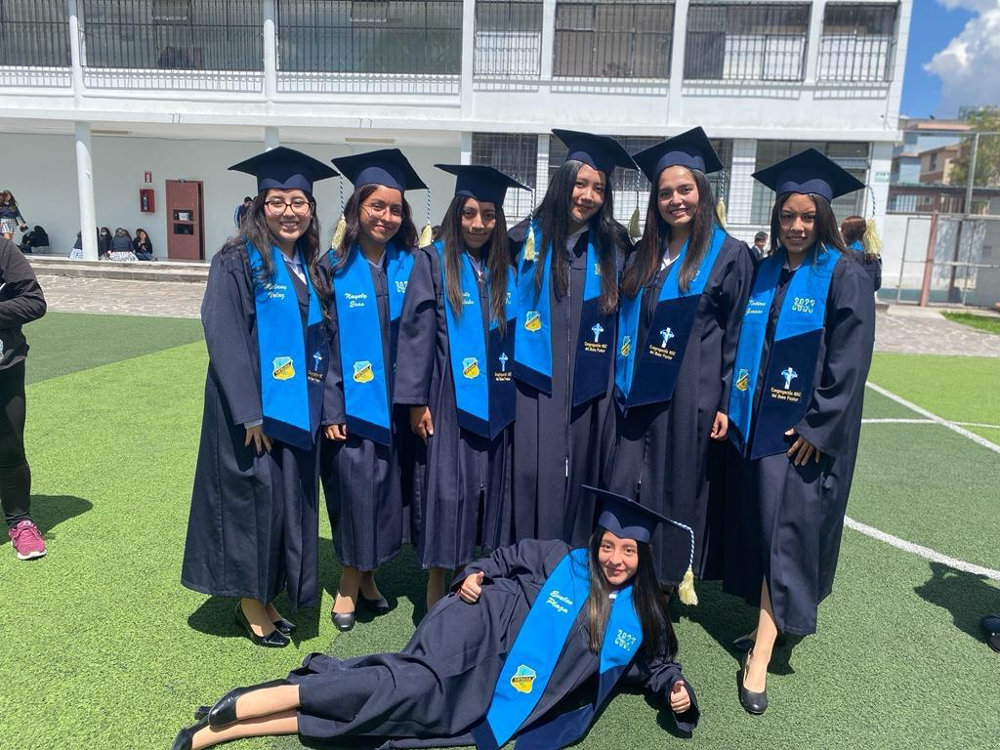
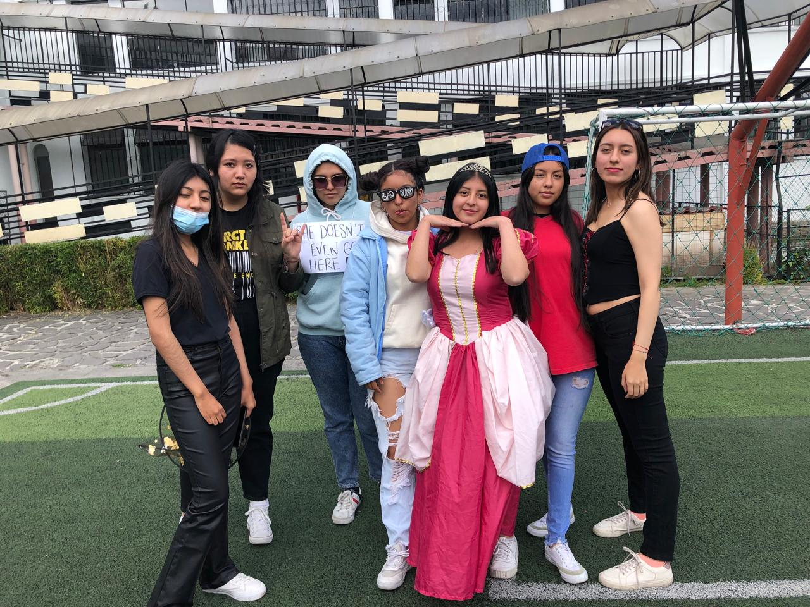
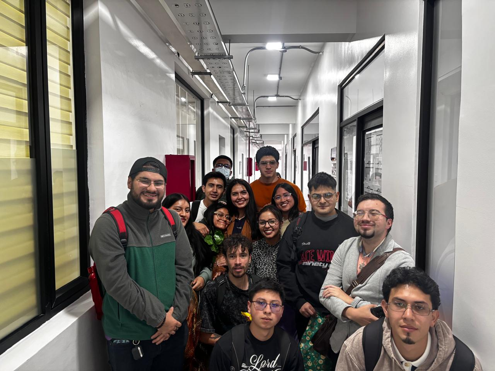
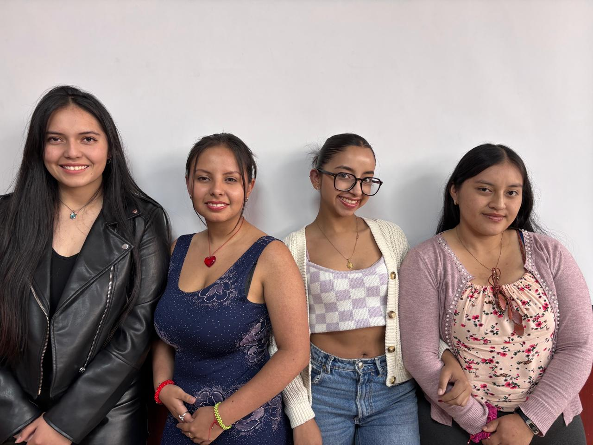
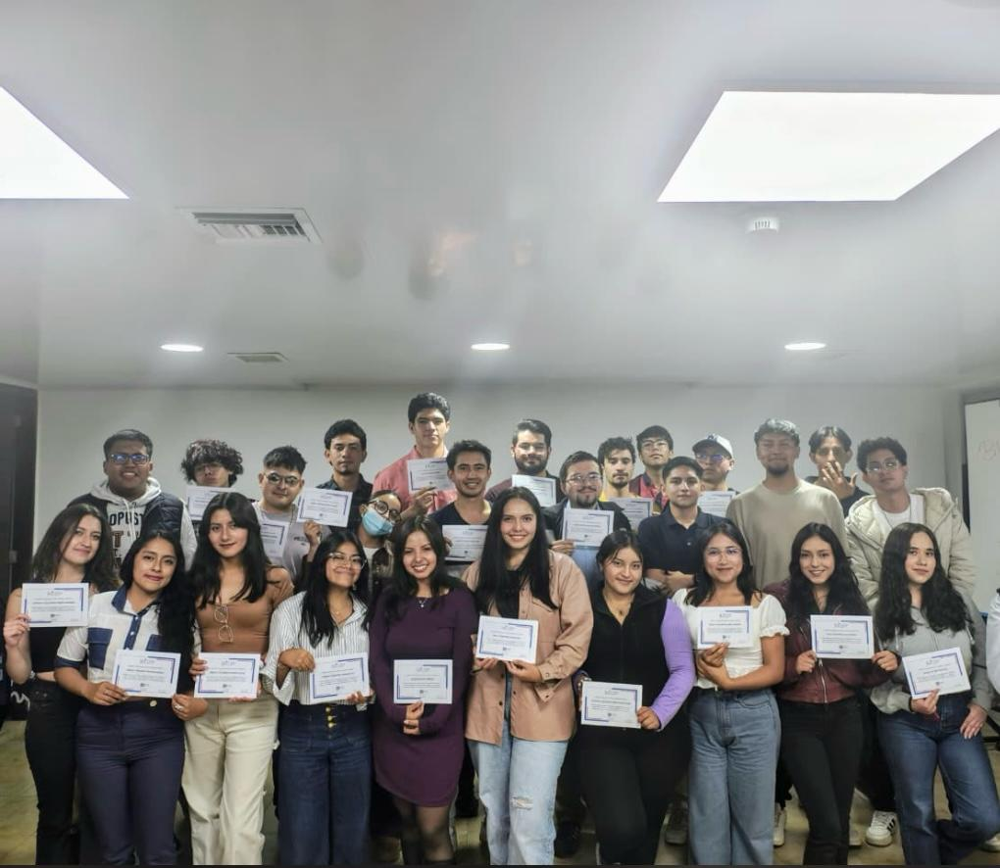

ESTUDIOS
Estudios Secundarios
Realicé mis estudios secundarios en una sola escuela y colegio. Mi colegio se llama UESME, Unidad Educativa Santa María Eufrasia. Ingresé a la institución desde primero año de educación general básica a los 5 años y culminé mi formación secundaria a los 17 años en el 2023. Logré ingresar al cuadro de honor lo que llenó a mis padres de orgullo y me demostró a mi misma que con esfuerzo y dedicación todo es posible.



Estudios Universitarios



Cuando culminé mi educación secundaria, no sabía que carrera debía escoger. En ese proceso, donde me encontraba un poco intranquila con respecto a lo que me debía seguir fue cuando encontré la carrera de Negocios Digitales, tras una revisión de la malla, su contenido llamó mucho mi atención.
Actualmente me encuentro en 6to nivel de la carrera, y aunque a veces tuve dudas sobre lo que estaba aprendiendo y sobre la incertidumbre laboral puedo decir que la carrera tiene un lado que llama mucho mi atención: cada vez se se aprende algo nuevo y actual sobre varios ámbitos y disciplinas.
Puedes revisar algunos de los proyecto que he realizado aquí.